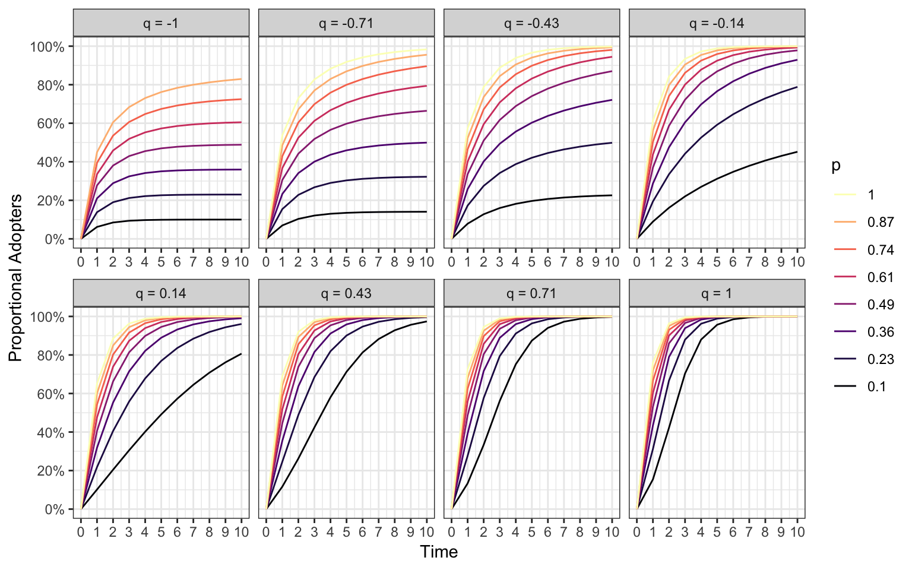

Vor dem Hintergrund immer schneller verlaufender Innovationszyklen und der zunehmenden Digitalisierung sind Modelle die versuchen Innovationsmechanismen zu erklären von großem Interesse. Obwohl die Innovationsforschung, die sich mit diesem Thema befasst, heutzutage einen großen Stellenwert einnummt, befassten sich Forscher um 1960 mit der Thematik. Insbesondere Rogers und Bass befassten sich der Erklärung und Modellierung von Innovationen. Bass gelang es als Erster ein mathematisches Model zur Erklärung von Innovationen und der Produktentwicklung zu erstellen, die ursprünglich von Rogers in seiner “Diffusion of Innovation Theory” aufgestellt wurden. Das heute unter dem Namen Bass-Model bekannte statistische Verfahren wurde nach der Publikation der theoretischen Grundlagen durch empirische Daten untermauert.
In diesem Post möchte ich den Effekt der Modelparameter darstellen, da diese ohne Kontext oftmals schwierig zu verstehen sind.
Es gibt verschiedene Ansätze dieses Models Innovationen zu betrachten. Ein Ansatz ist, den prozentualen Anteil der Adopter zu modellieren. Im Zentrum des Bass-Models steht der Adopter. Als Adopter werden in diesem Zusammenhang Personen oder Organisationen bezeichnet, die ein neues Produkt nutzen oder innovative technologische Lösungen einsetzten. So kann ein Unternehmen daran interessiert sein, wie hoch der prozentuale Anteil der Nutzer seines neuen Produktes ist.
Im Rahmen dieser Fragestellung kann dieser Anteil durch das Bass Model geschätzt werden. Das Model basiert dabei auf einer S-förmigen Adoptionskurve die durch folgende Formel dargestellt wird.
\(F(t) = 1 - \frac{e^{-(p + q)t}}{1 + \frac{q}{p}e^{-(p+q)t}}\)
Bei diesem Model werden zwei Koeffizienten geschätzt, die bei der Adoption von Innovationen Einfluss üben. Dabei handelt es sich zum eine um den Innovationkoeffizienten p und zum anderen um den Imitationskoeffizienten q.
Diese beiden Koeffizienten erklären, in wie fern Innovatoren und Immitatoren auf die Adoption der Innovation wirken.
Die Höhe des Innovationskoeffzienten p bestimmt wie stark die stark die Adoption bei der Einführung einer Innovation ist. Je höher der Innovationskoeffizient desto steiller ist die Addoptionskurve zu Beginn. Dass heißt, dass viele Innovatoren ein Produkt adoptieren.
Die Höhe des Imitationskoeffizienten q erklärt den Einfluss von Imitatoren. Imitatioren orientieren sich dabei an das Verhalten von Adoptern. Der Imitionskoeffizient steht somit in Wechselwirkung mit dem Innovationskoeffizient.
Während der Innovationskoeffizient p positiv ist, kann der Imitaitonskoeffizient q auch negativ sein. Typische Wert für p liegen im Bereich von null bis zwei. Der q-Wert kann theoretisch große negative Werte annehmen, liegt typischerweise im Bereich von minus ein bis 2. Bei hohen negativen Werten ist kaum Imitaionsverhalten zu erwarten, was sich durch eine flache Adoptionskurve darstellt, nachdem der Innovationseffekt abklingt.
Ich zur Veranschaulichung des Bass Models die Adoptionskurve verschiedener Parameterkombinationen von p und q visualisiert.
Die Darstellung zeigt Bass-Modelle verschiedener Parameterkombinationen von p und q. Das Model stellt den kumulierten prozentualen Anteil der Adopter dar. Jedes Panel steht dabei für einen Wert von q (Imitaitonskoeffizient) und die Farbe der Linien steht für einen Wert von p (Innovationskoeffzient), wobei mit steigendem Innovationskoeffzienten die Linie heller wird.
library(tidyverse)
show_bass_curves <- function(p, q) {
g <- expand.grid(p, q)
p_ <- g$Var1
q_ <- g$Var2
t <- 0:10
res <- map2(.x = p_, .y = q_, .f = netdiffuseR::bass_F, Time = t)
g <- g %>% as.data.frame %>% as.tibble %>% unite(col = "Var", c("Var1", "Var2")) %>% pull
res <- res %>%
set_names(g) %>%
as_tibble() %>%
add_column(Time = t) %>%
gather(key, value, -Time) %>%
separate(col = "key", into = c("p", "q"), sep = "_") %>%
mutate_at("q", as.numeric) %>%
mutate(q = factor(x = glue::glue("q = {q}"),
levels = glue::glue("q = {sort(unique(q))}"),
ordered = TRUE))
res %>%
ggplot(aes(x = Time, y = value, col = p)) +
geom_line() +
facet_wrap(~ as.factor(q), nrow = 2, scales = "free_x") +
viridis::scale_color_viridis(discrete = T, option = "magma") +
theme_bw() +
scale_y_continuous(labels = scales::percent,
breaks = seq(0, 1, .2),
name = "Proportional Adopters") +
scale_x_continuous(breaks = t) +
guides(colour = guide_legend(reverse=T, title = "p"))
}
p <- round(seq(.1, 1, length.out = 8), 2)
q <- round(seq(-1, 1, length.out = 8), 2)
show_bass_curves(p, q)
Wir erkennen im Diagramm, das ein hoher Innovationskoeffizient die Adoption zu Beginn der Markteinführung positiv beeinflusst. Zudem lässt sich aus dem Diagramm der Einfluss des Imitationseffekts und dessen Interaktion mit dem Innovationskoeffizienten erkennen. Wenn der Innovationskoeffzient hoch ist (Panel links unten), ist auch die Adoption im weitern Zeitverlauf hoch. Sinkt der Imitationskoeffizient hemmt er den weiteren Adoptionsverlauf. Er kann ihn sogar ausbremsen, wenn er negativ wird. In diesem Fall exisitert kein Imitationseffekt und die Innvation ereicht keine vollständige Marktdurchdringung.
Das Bass-Model kann eingesetzt werden um den Anteil der kumulierten Adopter bzw. die Adoptionskurve zu modellieren. Das Model besitzt zwei Parameter, nämlich den Innovations- und den Imitationskoeffizienten, die im Bass-Model als p und q bezeichnet werden. Der Innovationskoeffzient p ist unabhängig von q und bestimmt die Steigung der Adoption zu Beginn. Je höher der Koeffizient desto stärker der Effekt der Innovatoren. Der Imitationskoeffizient q interagiert mit p und bestimmt den Verlauf nach der Innovationsphase. Wenn der Imitationseffekt fehlt, also q sehr klein oder negativ ist, fehlen die Imitatoren und die Adoption wird ausgebremst.